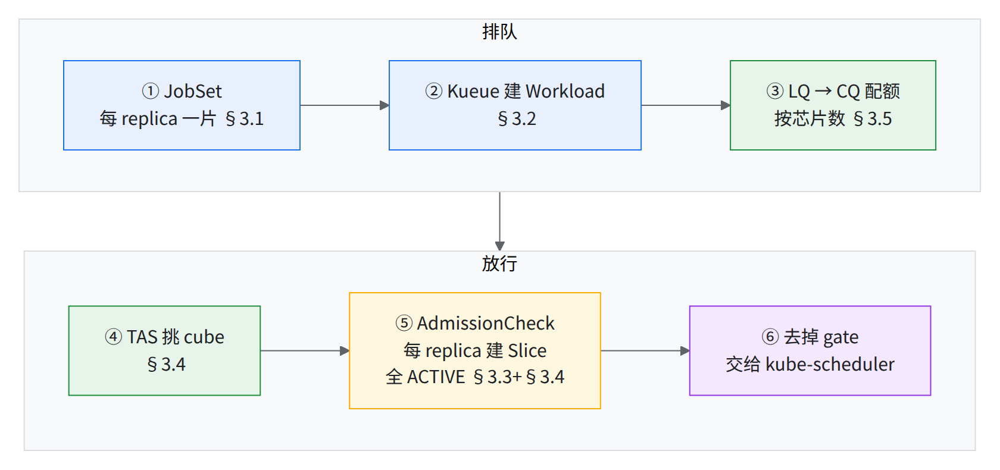
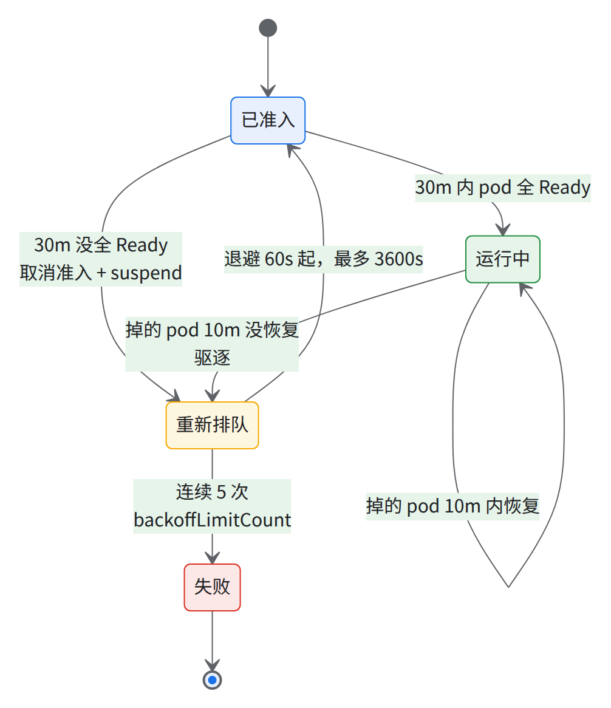
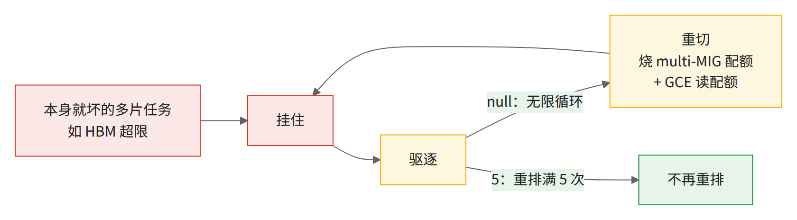
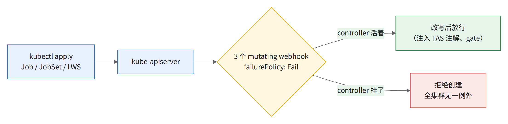
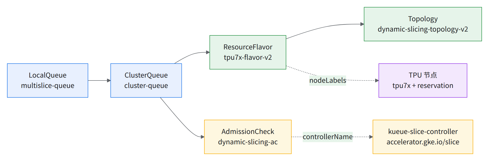
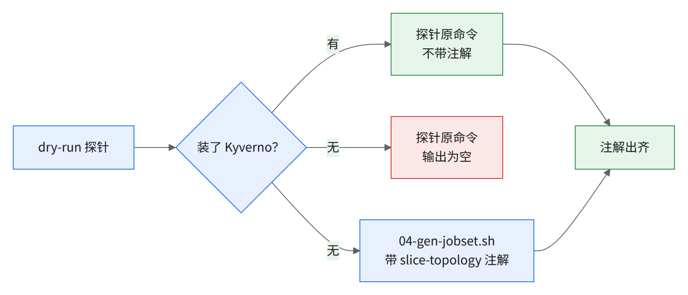

03 集群内组件：JobSet、Kueue、kueue-slice-controller、队列
要解决什么：kube-scheduler 不知道「pod 要等切片连好」「所有切片要一起到位」；Kueue + AdmissionCheck 就是这道闸。 为什么难：slice-controller 是全集群单点（webhook fail-closed）；
waitForPodsReady一注释，坏掉的 cube 不会被驱逐。
- 2 副本 + PDB，slice-controller
- 30m / 10m 上车 / 途中掉人时限
- 5 次 重排上限
- 7 层 Topology
- 64 芯 每 cube 配额
前提：02 出口满足；托管 Slice Controller 已开（
kubectl get crd slices.accelerator.gke.io有结果）。 版本按 01 §1.6 BOM；控制器全放 default-pool（CPU 节点）。 变量与脚本（唯一变量块 scripts/env.sh）：bashsource ~/runbook-env.sh && rb_env_check PROJECT REGION ZONE CLUSTER # 本章用：CLUSTER JOBSET_VERSION KUEUE_VERSION SYSTEM_POOL # RESERVATION TPU_QUOTA SPARE_CUBES NS LOCAL_QUEUE INSPECT_NS STATE_DIR cd "$RUNBOOK_DIR/scripts" && ./03-addons.sh preflight # 只读：工具、kubectl 上下文、Slice CRD、default-pool、chart 存在改状态的子命令在 scripts/03-addons.sh（支持
--dry-run），清单scripts/03-*.yaml。 前置：
kubectl、helm≥3.8（OCI chart）、jq、envsubst（gettext）[推断：OCI 支持的 Helm 版本下限]；cluster-admin[推断]
- 自查：
kubectl auth can-i '*' '*' --all-namespaces期望yes；no就先找使用方 SRE 授权，别带着部分权限开工（会卡在 CRD / webhook / PriorityClass 这类集群级对象）- kubectl 上下文名须含
$CLUSTER，否则脚本停- default-pool ≥2 个 Ready 节点（反亲和）；02 的 TAS 标签闸门已过
- chart 版本存在：
helm show chart oci://registry.k8s.io/{jobset,kueue}/charts/... --version ...（preflight已含）
Kueue 五分钟模型：本章每一节装的是哪一格
完整时序图见 00 §2。

读图：黄色那格是唯一跟 Google 托管组件打交道的一步。术语：Kueue · TAS · AdmissionCheck · kueue-slice-controller · Slice · scheduling gate。
3.1装 JobSet
做法：Helm 装 chart 0.12.0，values scripts/03-jobset-values.yaml（参考集群原值：3 副本、4 CPU / 16Gi、容忍系统池 taint）：
./03-addons.sh jobset # = helm upgrade --install jobset oci://registry.k8s.io/jobset/charts/jobset --version $JOBSET_VERSION \
# -n jobset-system --create-namespace -f 03-jobset-values.yaml --wait --timeout 20m
GA 指南装法（副本和资源不可调，只适合试验集群）：
export VERSION=v0.12.0
kubectl apply --server-side -f https://github.com/kubernetes-sigs/jobset/releases/download/$VERSION/manifests.yaml
kubectl get pods -n jobset-system
- 实测集群
registry.k8s.io/jobset/jobset:v0.10.1（之后已升到 v0.12.0，以交付当天 verify 输出为准，见 §3.7）；sub-slice 要 ≥0.12.0。 image.tag须等于v$JOBSET_VERSION，否则脚本停；别kubectl set image，下次 helm upgrade 静默改回。
⚠️helm upgrade 不升 JobSet 的 CRDJobSet CRD 在
crds/，helm upgrade不碰，CTK 升级因此漏了它。脚本顺序：helm pull --untar→kubectl apply --server-side -f <chart>/jobset/crds/→helm upgrade。
验证：
kubectl get deploy,pods -n jobset-system # 期望 jobset-controller 3/3 Available
kubectl get deploy -n jobset-system -o jsonpath='{.items[*].spec.template.spec.containers[*].image}{"\n"}' # 期望 registry.k8s.io/jobset/jobset:v0.12.0
kubectl get validatingwebhookconfiguration,mutatingwebhookconfiguration | grep jobset # 各 1 个配置，共 4 个 webhook（2+2）
幂等：收敛到同一 release。回滚：./03-addons.sh rollback-jobset <REV>（REV 查 helm history jobset -n jobset-system）。
卸载：先删所有 JobSet，再 helm uninstall jobset -n jobset-system；CRD 留着，整集群清理时再 kubectl delete crd jobsets.jobset.x-k8s.io 源https://helm.sh/docs/chart_best_practices/custom_resource_definitions/。
本节可能踩到的问题：组件版本下限与 allowlist
3.2装 Kueue 并写配置
做法：Helm 装 chart $KUEUE_VERSION，Deployment 和 ConfigMap 同一 release；改配置 = 改 scripts/03-kueue-values.yaml 重跑 源kueue-values.yaml 文件头：
./03-addons.sh kueue # = helm upgrade --install kueue oci://registry.k8s.io/kueue/charts/kueue --version $KUEUE_VERSION \
# -n kueue-system --create-namespace -f 03-kueue-values.yaml --wait --timeout 20m
# 已有 release 时再 rollout restart（改完配置要重启）
chart 版本号不带 v（GA 指南 --version 0.15.5）源GA 指南。Kueue CRD 在 templates/，随卸载删，所以先删 Kueue 对象。GA 指南装法：
export VERSION=v0.18.10 # 钉 0.18.x ≥0.18.5（大任务饿死修复从 0.19.1 回移），见 01 §1.6 版本表
kubectl apply --server-side -f https://github.com/kubernetes-sigs/kueue/releases/download/$VERSION/manifests.yaml
版本以 BOM 为准（env.sh 默认 KUEUE_VERSION=0.18.10）。
配置：ConfigMap kueue-manager-config（key controller_manager_config.yaml），values 取自参考集群的配置：
clientConnectionqps 200 / burst 400、6 个integrations、managedJobsNamespaceSelector排除 22 个系统 namespace。groupKindConcurrency：Pod/Job/JobSet/LWS/Deployment/StatefulSet/Workload 20，LQ/Cohort/CQ/RF 1（别调大）。
# 节选，完整见 runbook/scripts/03-kueue-values.yaml（./03-addons.sh kueue 用的就是它，别单独 apply 这段）
manageJobsWithoutQueueName: true # 非系统 namespace 的所有 Job 都归 Kueue 管；排除列表见 03-kueue-values.yaml
waitForPodsReady:
timeout: 30m
recoveryTimeout: 10m
blockAdmission: false
requeuingStrategy:
timestamp: Eviction
backoffLimitCount: 5 # 参考集群是 null（为 Pathways 无限重排）；本书模板改回它之前的 5，见下
backoffBaseSeconds: 60
backoffMaxSeconds: 3600
waitForPodsReady =「限时上车，掉队整团重排」：

- 30m 即默认值 源https://kueue.sigs.k8s.io/docs/tasks/manage/setup_wait_for_pods_ready/；坏 cube 只能靠
recoveryTimeout驱逐，亲和只在调度时生效；它不写 =timeout，0s才是关 源同上页; 没核 0.18.x。
唯一改掉的参考集群值：backoffLimitCount 改回 5 [推断，未实测]。参考集群为 Pathways 设 null = 无限重排 源https://kueue.sigs.k8s.io/docs/tasks/manage/setup_wait_for_pods_ready/，参考集群配置里的注释写着「集群级，不只 Pathways」。

读图：不跑 Pathways 时，null 只剩左边那个空转环。
| 配置 | 要点 |
|---|---|
manageJobsWithoutQueueName: true |
被管 namespace 里不带 kueue.x-k8s.io/queue-name 的 Job 永远 suspended 源https://kueue.sigs.k8s.io/docs/reference/kueue-config.v1beta2/ |
| 排除列表 | Job 类只在不带队列名时豁免，Pod 类彻底不管；22 个外只加 rb-inspect（= $INSPECT_NS，04 §4.1 用） |
| Feature gates | TopologyAwareScheduling=true、FailureRecoveryPolicy=true；控制器 3 副本 × 16 CPU / 64Gi（注） |
| 改完重启 | kubectl rollout restart deployment -n kueue-system kueue-controller-manager（脚本自动） |
| 实测集群线上 | v0.17、waitForPodsReady 和 manageJobsWithoutQueueName 都注释掉、并发与 qps 不同 |
- 注：开 TAS 后 Kueue 跟踪全部 Pod 和节点，吃内存（整 pod 144 cube × 16 = 2,304 节点 [推断]）源https://kueue.sigs.k8s.io/docs/concepts/topology_aware_scheduling/。manifests 安装加参数
--feature-gates=...（其他整 pod 部署的 Kueue 0.15.8 即如此）。
验证：
kubectl get pods -n kueue-system # 3/3 Running
kubectl get deploy -n kueue-system -o jsonpath='{.items[*].spec.template.spec.containers[*].image}{"\n"}' # 镜像 tag = v$KUEUE_VERSION
kubectl get cm kueue-manager-config -n kueue-system -o jsonpath='{.data.controller_manager_config\.yaml}' | grep -A3 waitForPodsReady # [需验证] 必须是非注释行
kubectl get cm kueue-manager-config -n kueue-system -o jsonpath='{.data.controller_manager_config\.yaml}' | grep -c rb-inspect # 期望 1
helm history kueue -n kueue-system --max 5 # 最新 revision STATUS deployed
⛔注意
- 实测集群的
waitForPodsReady整段注释掉 → 见经验教训第 34 条。- 每次 XPK / 节点池操作后都复查。
幂等：多一次滚动重启（准入短暂暂停 [推断]）。 回滚：
- 改坏配置：
./03-addons.sh rollback-kueue <REV>（=helm rollback kueue <REV> -n kueue-system --wait+ rollout restart）。 - 手工 patch 不进 Helm 历史，rollback 会抹掉它，一律回写 values。
- 卸载：controller 活着时先按 §3.4 删除顺序删 Kueue 对象，再
helm uninstall kueue -n kueue-system（§3.8）；反了kueue.x-k8s.io/resource-in-usefinalizer 没人摘，卡「Still destroying」不报错 → 见经验教训第 40 条。
本节可能踩到的问题：作业清单与队列配置写错 · 组件版本下限与 allowlist · CPU 系统池 · 控制面容量 · Kueue 在 9,216 芯规模下的吞吐 · 可观测性盲区
3.3装 kueue-slice-controller（集群级单点，按高可用装）

读图：webhook 无 namespaceSelector，所以全集群受影响 → 见经验教训第 28 条。
清单：scripts/03-slice-controller.yaml，参考集群用模板渲染 + 镜像钉 digest。GA 指南版 1 副本、无 PDB、无 ResourceQuota，别用 源GA 指南。两个集群一致的要求：
| 项 | 值 |
|---|---|
| 镜像 | tpuongke/kueue-slice-controller:v0.8.0-200（按 digest 钉；禁用 :latest）→ 见经验教训第 28 条。早期版本不含恢复路径修复（要 ≥v0.8.0-203 ＋ kueue-tpu-ac 新版本（版本号以 Google 确认为准），07 §7.2），交付前须升级并重跑 07 恢复演练 → 09 D10，步骤见本节「升级到含修复的版本」 |
| 副本 | 2，--leader-elect，preferred 反亲和 |
| PDB | minAvailable: 1 |
| 优先级 | system-cluster-critical（需配套 ResourceQuota，否则 pod 建不出） |
| nodeSelector | cloud.google.com/gke-nodepool: default-pool |
| 资源 | 实测集群 requests 4 CPU / 16Gi、limits 8 / 32Gi；本书用参考集群 8 / 16Gi、12 / 32Gi |
| 参数 | --feature-gates=UseRetryMechanismForSliceCreation=true --activation-timeout=60m --default-slice-health-node-affinity=HEALTHY_AND_DEGRADED --kube-api-qps=100 --kube-api-burst=200 |
--activation-timeout默认 3 min，建片高峰会反复驱逐；先例 60m，也有部署用过 6/10/15m → 见经验教训第 35 条。--default-slice-health-node-affinity与使用方降级策略一致（09 D03）。
前置：§3.1、§3.2 已 Ready（RBAC 读 admissionchecks、写 workloads/status）源03-slice-controller.yaml ClusterRole。做法：
./03-addons.sh slice-controller # = kubectl apply --server-side -f 03-slice-controller.yaml
# + kubectl rollout status deploy/slice-controller-controller-manager -n slice-controller-system --timeout=10m
⚠️apply 到 pod Ready 之间，全集群 Job/JobSet/LWS 创建被拒——选没人提交时做 [推断]证书由 controller 自己生成写回（Secret 空壳、无 caBundle，RBAC 有
secrets、mutatingwebhookconfigurationsupdate 权）[推断，依据清单的 Secret / ClusterRole]。
验证：
kubectl get pods -n slice-controller-system -o wide # 2/2 Running，分在两个节点
kubectl get pdb -n slice-controller-system # ALLOWED DISRUPTIONS 1
kubectl get mutatingwebhookconfiguration slice-controller-mutating-webhook-configuration # 实测集群里的名字
kubectl get mutatingwebhookconfiguration slice-controller-mutating-webhook-configuration \
-o jsonpath='{range .webhooks[*]}{.name} {.failurePolicy}{"\n"}{end}' # 期望 mjob.kb.io / mjobset.kb.io / mleaderworkerset.kb.io，都是 Fail
kubectl get deploy -n slice-controller-system slice-controller-controller-manager \
-o jsonpath='{.spec.template.spec.containers[0].image}{"\n"}' # 期望 tpuongke/kueue-slice-controller:v0.8.0-200@sha256:2d44e79eb24304102a5c207288771d4d6de403a5f80346ac2fabd6e99fac7be3（= 03-slice-controller.yaml 里钉的 digest），不是 :latest；按本节下文「升级到 含修复的版本」升级后换成新 digest
kubectl get resourcequota -n slice-controller-system gcp-critical-pods # 存在；缺了 pod 建不出来（FailedCreate: insufficient quota）
kubectl logs -n slice-controller-system deploy/slice-controller-controller-manager --tail=20 # 无 "flag provided but not defined"
ALLOWED DISRUPTIONS 0 = 第二个 pod 没 Ready，查反亲和和节点余量。
幂等：重跑无副作用。回滚：git 上一版清单再 kubectl apply --server-side -f。整个移除先删 webhook 配置再删其余（反过来全集群建不了 Job）：
./03-addons.sh remove-slice-controller # 先查：kubectl get workloads -A 为空、Kueue 建的 Slice 已删完（否则它们的 finalizer 没人摘 → 经验教训第 40 条）
# 再：kubectl delete mutatingwebhookconfiguration slice-controller-mutating-webhook-configuration
# kubectl delete -f 03-slice-controller.yaml
控制器已挂、急需解封：只删 webhook 配置，重新 apply 会装回来 [推断，依据经验教训第 28 条]。
升级到 ≥v0.8.0-203（交付前必做，09 D10）——未实测，本书只在早期版本上跑过。
- 先拿到目标镜像（待确认，问 Google 工程，经 Google TAM）：
- 含修复的版本的完整
tag@sha256:digest； - 它是否同时带 kueue-tpu-ac 新版本（版本号以 Google 确认为准） 的周期 reconcile，还是要另装（新版本起有 20 min 周期 reconcile 是有出处的，与 05 §5.6 同源；没资料的是 v0.9.x 是否已含这些修复）；
- 新版是否仍认
--kube-api-qps/--kube-api-burst等现有参数（不认会 CrashLoop，见经验教训第 28 条）。
- 含修复的版本的完整
- 改清单：只改 03-slice-controller.yaml 的
image:一行（tag 和 digest 一起换），其余不动。 - apply：选没人提交的窗口（apply 到 Ready 之间全集群 Job 创建被拒，见上方 WARN），跑
./03-addons.sh slice-controller（apply + rollout status 10m）。 - 验证：跑上面「验证」整段，镜像那条期望换成新 digest；日志无
flag provided but not defined。 - 重跑恢复演练：07 §7.3，结果回填 07 §7.4；早期版本上量的 MTTR 不能沿用。
- 回滚：
image:改回早期版本那行再./03-addons.sh slice-controller。 - 分工：Google 工程给镜像、交付方执行、使用方 SRE 签字。
本节可能踩到的问题：OCS 故障 · 组件版本下限与 allowlist
3.4Topology、AdmissionCheck、ResourceFlavor
Topology 是嵌套树（block → cube → …），每层对应节点上一个 partition 标签（host = chip ÷ 4）：
| 层（从上到下） | 一个单元多大 | 在上一层里有几个 |
|---|---|---|
| block（整个 pod） | — | 本 pod 1 个 |
| 4x4x4（1 cube） | 64 chip = 16 host | 每个 block 里 144 个 |
| 2x4x4 | 32 chip = 8 host | 每个 4x4x4 里 2 个 |
| 2x2x4 | 16 chip = 4 host | 每个 2x4x4 里 2 个 |
| 2x2x2 | 8 chip = 2 host | 每个 2x2x4 里 2 个 |
| 2x2x1 | 4 chip = 1 host | 每个 2x2x2 里 2 个 |
| hostname | 1 台 host | 每个 2x2x1 里 1 个 |
4x8x8 = block 下挑 4 个整 cube；2x2x2 = 某 cube 里挑一个 2x2x2 分区 [推断]；缺哪层就点不了那种形状。

读图：箭头 = 引用；建从右往左，删从左往右（CQ 先删）。
用 7 层 Topology：直接 apply scripts/03-kueue-topology-flavor.yaml.tmpl（搬自参考集群的 flavor 部署模板，无需另取）。只有 3 层（block / 4x4x4-id / hostname）时 sub-cube 准入报 Flavor "<flavor 名>" does not contain the requested level → 见经验教训第 32 条（flavor 名参考集群 tpu7x-flavor；实测集群上是 <池数>xtpu7x-128）。
清单 scripts/03-kueue-topology-flavor.yaml.tmpl（唯一变量 ${RESERVATION}）：
| 对象 | 名字 | 关键字段 |
|---|---|---|
| Topology（v1beta1） | dynamic-slicing-topology-v2 |
cloud.google.com/gce-topology-block → gke-tpu-partition-4x4x4-id → 2x4x4-id → 2x2x4-id → 2x2x2-id → 2x2x1-id → kubernetes.io/hostname（必须最后） |
| AdmissionCheck | dynamic-slicing-ac |
controllerName: accelerator.gke.io/slice |
| ResourceFlavor（v1beta2） | tpu7x-flavor-v2 |
nodeLabels: gke-tpu-accelerator: tpu7x + reservation-name: "$RESERVATION"；topologyName: dynamic-slicing-topology-v2；toleration google.com/tpu=present:NoSchedule |
| Topology ×2（可选） | super-slice-topology、sub-slice-topology |
3 层，只为 XPK 按名字匹配 |
- 没搬：参考集群旧 v1 对象（
dynamic-slicing-topology/tpu7x-flavor）、Pathways 的default-flavor/cpu-user。 - 实测集群只有 3 层
super-slice-topology+ RF<池数>xtpu7x-128+ ACss-kueue-operator。
做法（连 §3.5：PriorityClass → Topology/AC/RF → CQ/LQ）：
export TPU_QUOTA=$(./03-addons.sh quota | sed -n 's/^建议 TPU_QUOTA=\([0-9]*\).*/\1/p') # 取 §3.5 quota 的建议值；空 = SPARE_CUBES 没填（先填 ~/runbook-env.sh），queues 会报 TPU_QUOTA 未填
./03-addons.sh queues --dry-run # 渲染到 $STATE_DIR/03/ 并打印将执行的 kubectl apply
./03-addons.sh queues
验证：
kubectl get topology dynamic-slicing-topology-v2 -o jsonpath='{range .spec.levels[*]}{.nodeLabel}{"\n"}{end}' # 7 行，最后一行 kubernetes.io/hostname
kubectl get admissioncheck -o custom-columns=NAME:.metadata.name,CONTROLLER:.spec.controllerName,ACTIVE:'.status.conditions[?(@.type=="Active")].status' # dynamic-slicing-ac accelerator.gke.io/slice True
kubectl get resourceflavor tpu7x-flavor-v2 -o jsonpath='{.spec.nodeLabels}{"\n"}' # reservation-name = $RESERVATION
kubectl get nodes -l cloud.google.com/gke-tpu-accelerator=tpu7x,cloud.google.com/reservation-name=$RESERVATION --no-headers | wc -l # = RF 能选中的节点数，应 ≈ TPU 节点总数
AC Active=False 时 CQ 里 workload 全 Pending 且看不出原因（查 .status.admissionChecks）。
幂等：重复 apply 是 no-op；改 Topology levels 或 RF topologyName 被拒（field is immutable），别绕。
删除顺序（整集群拆除时）：clusterqueue → resourceflavor → admissioncheck → topology，Kueue controller 须活着 → 见经验教训第 40 条；被 RF 引用的 Topology 卡在 kueue.x-k8s.io/resource-in-use。
⛔铁律
- 每层 label 须在每个 TPU 节点上，缺一层该节点对 TAS 不可见（02 §2.7 TAS 闸门已查）。
- ResourceFlavor 里不放
gke-tpu-topology或 slice/partition 键。- 线上别删了重建 Topology（坏 TAS 缓存：两 pod 挤一节点、31/32 个分区）→ 见经验教训第 32 条；改层级就新建 v2 对象并行。
本节可能踩到的问题：reservation 名字或路径填错 · 作业清单与队列配置写错 · NAP 与自动扩缩在 All Capacity 整 pod 上的坑
3.5ClusterQueue、LocalQueue、优先级
配额（google.com/tpu 按芯片计，1 cube = 64；S 见 09 D04）：Σ nominalQuota ≤ min(128, 健康 cube − 备件 S) × 64，每天重算。
- 健康 cube = 16 节点全 Ready + HEALTHY + TPU=4 + 未被 05-isolate-cube.sh 隔离。
- S = 每天留几个健康 cube 不准入，不是规划空出的 16（144 − 128；拿 16 当 S、健康 130 → 只剩 114，128 的任务永远排不进）（09 D04）→ 见经验教训第 33 条。
- 实测集群：单 CQ
cluster-queue，配额 = 池数 × 64，没扣备件 [推断]。
数据表与出处（3 行）
| 口径 | 类别 | cube 数 |
|---|---|---|
| 约定口径 | 能进任务 | 128 |
| 约定口径 | 规划余量（128→130） | 2 |
| 约定口径 | 不在 SLO 目标内、当热备 | 14 |
出处：00 章 §1（144 cube）、§4（128 + 2 + 14；130 在 SLO 目标内 + 14 不在）。单独打开 SVG
账面口径：方块位置不对应物理位置。
读图：图里是约定口径的账面分法；配额按每天实测的健康 cube 数算（上面的公式），不按账面。
清单 scripts/03-kueue-queues.yaml.tmpl（变量 ${TPU_QUOTA} ${NS} ${LOCAL_QUEUE}，照实测集群改名、字段原样）：
- CQ
cluster-queue：namespaceSelector: {}、queueingStrategy: BestEffortFIFO、nominalQuota: "$TPU_QUOTA"；挂 ACdynamic-slicing-ac（onFlavors: [tpu7x-flavor-v2]，单 flavor 可省）；preemption：withinClusterQueue: LowerPriority/reclaimWithinCohort: Never/borrowWithinCohort.policy: Never。 - LocalQueue
$LOCAL_QUEUE（默认multislice-queue）在$NS（默认default）。 - LocalQueue
hc也在$NS，同指cluster-queue：给 08a 周期健康检查用，配health-check优先级（见下表）。名字可按你们的规范改；未实测。 - CQ 只覆盖
google.com/tpu：pod 再声明cpu/memory就无法准入 [推断]；04 冒烟 JobSet 只声明它，同实测集群。 - 不建
defaultLocalQueue：不带队列名的 Job 一直 suspended，正是闸门。建了就会自动打queue-name: default（LocalQueueDefaulting，v0.17 起稳定）源https://kueue.sigs.k8s.io/docs/tasks/manage/enforce_job_management/setup_default_local_queue。
算配额：
./03-addons.sh quota # 数健康 cube（16 节点 Ready + HEALTHY + TPU=4 + 未隔离）；填了 SPARE_CUBES 就给出 min(128, 健康 − S) × 64
export TPU_QUOTA=$(./03-addons.sh quota | sed -n 's/^建议 TPU_QUOTA=\([0-9]*\).*/\1/p') # 取「建议 TPU_QUOTA=<数>」那一行；必须是 64 的整数倍，queues 会检查
echo "TPU_QUOTA=$TPU_QUOTA" # 空 = SPARE_CUBES 没填（quota 只在填了时给建议值）
做法：同 §3.4 ./03-addons.sh queues。每日重算：TPU_QUOTA 只用当天 quota 输出（手填旧值会抹掉隔离扣的配额），TPU_QUOTA=<建议值> ./03-addons.sh queues（带 --force-conflicts，隔离脚本也 patch 该字段）。
验证：
kubectl get clusterqueue -o custom-columns=NAME:.metadata.name,ACTIVE:'.status.conditions[?(@.type=="Active")].status',REASON:'.status.conditions[?(@.type=="Active")].reason',QUOTA:'.spec.resourceGroups[0].flavors[0].resources[0].nominalQuota'
# 期望 cluster-queue True Ready $TPU_QUOTA 的值
kubectl get localqueue -A # $NS/$LOCAL_QUEUE 和 $NS/hc → cluster-queue
kubectl get priorityclass,workloadpriorityclass | grep -vE 'system-(cluster|node)-critical' # high 800 / medium 500 / low 100 / health-check 50，两类同名同值
CQ Inactive 最常见：引用的 RF 不存在（如 YAML 少了 ---，无报错）。
回滚：配额改错用旧值重跑 queues；删除按 §3.4 顺序，先删完 workload，否则 Terminating 等 kueue.x-k8s.io/resource-in-use [推断]；别手摘 finalizer，已准入 workload 会挂在不存在的配额上 源见经验教训第 40 条。
| 队列 | PriorityClass | |
|---|---|---|
| 实测集群 | 单 CQ | 五档：最高 / 高 / 中 / 低 / 最低（数值各集群自定） |
| 参考集群 | cohort（注 1） | 三档：高 / 中 / 低 |
| 本书 | 单 CQ | 参考集群 3 档 scripts/03-kueue-priority.yaml：PriorityClass + 同名 WorkloadPriorityClass，preemptionPolicy: Never（抢占全交 Kueue）；另加 health-check 50（注 2）；分档由使用方定 |
- 注 1：一个高优先级队列持全部配额、
withinClusterQueue: Never、reclaimWithinCohort: Any；default配额 0、可借满、可被抢占。AC 须onFlavors: [tpu7x-flavor-v2]，漏了「准入但永不切片」。 - 注 2：
health-check是本书加的（实测集群有同名 priority，数值没采集到），50 是 [推断]，只求低于 low，让生产能抢占健康检查；数值按你们的生产优先级定。前提：生产任务都带 priority-class，不带的按 0 算，反而排在健康检查后面。未实测，验证方法写在 03-kueue-priority.yaml 头注释。 - TPU 容器
requests == limits（google.com/tpu: 4），不能绕过 Kueue。
本节可能踩到的问题：reservation 标的数量 ≠ 能用的 cube 数 · 原地修复无 holdback · 权限与准入 · 排队与抢占
3.6策略（可选）
- 参考集群装 Kyverno 3.9.0：按 namespace 限优先级、注入 TAS 注解（策略按你们的规范写）。
- 实测集群不装：TAS 注解由 kueue-slice-controller 的 webhook 注入。
- 若装：reports-controller 给够内存（先例 OOM 上百次后调到 512Mi）；升级不带 values 会把 webhook 排除列表从 23 个缩成 2 个，先例曾因此打挂整个集群的写操作。
本节可能踩到的问题：MMIG 孤儿与卡死 · 控制面容量 · 权限与准入 · 切片模式与形状纪律 · 命名与长度限制
3.7验证
- webhook 注入探针：服务端 dry-run 看 webhook 注入 TAS 注解。手写
gke-tpu-topology只限 dry-run，真实任务按 04 的 JobSet 骨架不写。
kubectl -n default apply --dry-run=server -f - -o \
jsonpath='{.spec.replicatedJobs[0].template.spec.template.metadata.annotations}' <<'EOF'
{"apiVersion":"jobset.x-k8s.io/v1alpha2","kind":"JobSet","metadata":{"name":"dryrun-probe"},
"spec":{"replicatedJobs":[{"name":"w","replicas":4,"template":{"spec":{
"parallelism":16,"completions":16,"template":{"spec":{"restartPolicy":"Never",
"nodeSelector":{"cloud.google.com/gke-tpu-accelerator":"tpu7x",
"cloud.google.com/gke-tpu-topology":"4x4x4"},
"containers":[{"name":"m","image":"busybox","command":["sleep","1"],
"resources":{"limits":{"google.com/tpu":4}}}]}}}}}]}}
EOF
期望：含 "kueue.x-k8s.io/podset-slice-required-topology":"cloud.google.com/gke-tpu-partition-4x4x4-id","kueue.x-k8s.io/podset-slice-size":"16"；没有 = webhook 没调用。
- 原命令依赖 Kyverno；无 Kyverno 时 webhook 读 pod 模板
cloud.google.com/gke-tpu-slice-topology：

./04-gen-jobset.sh 4x4x4 --slices 4 --name dryrun-probe | kubectl apply --dry-run=server -f - -o \
jsonpath='{.spec.replicatedJobs[0].template.spec.template.metadata.annotations}{"\n"}'
期望：同上两条，另有 podset-required-topology: cloud.google.com/gce-topology-block。
- 三条即实测作业 JobSet 准入后的注解，dry-run 未准入只能来自 webhook [推断]。含义：全落同一 block 源https://kueue.sigs.k8s.io/docs/concepts/topology_aware_scheduling/；每 16 pod 一组落同一 cube 源同上页; slice 两条按注解名推断。
- AC / CQ：AC Active、CQ 非 Inactive，同 §3.4、§3.5。
- 冒烟：实测集群用 busybox 4x4x4 / 4x4x8 JobSet（
smoke-shared-cube、smoke-2cubes）；形状阶梯见 04。 - 一键只读：
./03-addons.sh verify。
📊实测快照：
03-addons.sh preflight / quota / verify真集群跑通。
- 不静默退出：
waitForPodsReady被注释时 grep 零命中，verify 打印!! … 经验教训第 34 条并继续，不在pipefail下直接 exit 1。- 现场与本书 7 处不同（feature gate 期望对 0.17+ 过严、slice-controller 无 digest、RF 名要改
TPU_FLAVOR等）。之后按书复跑：上面流程图里两条「无 Kyverno」分支即实测，exit 0。组件版本会随集群升级变化，按书复跑时为：JobSet
v0.12.0仍 1 副本；Kueue 3/3、v0.17；slice-controller 只剩 1 pod、PDB ALLOWED DISRUPTIONS = 0、镜像tpuongke/kueue-slice-controller:v0.9；3 个 webhook 都Fail。以交付当天 verify 的输出为准，并和上一次 verify 逐项比。
本节可能踩到的问题：作业清单与队列配置写错 · 权限与准入
3.8整章拆除（只在整集群销毁或重装时）
安装逆序，每步都在依赖的控制器活着时做：
./03-addons.sh teardown --dry-run # 先看将执行的命令
./03-addons.sh teardown # 有 Workload 残留时会拒绝执行
验证：kubectl get crd | grep -E 'kueue.x-k8s.io|jobset.x-k8s.io' 只剩 JobSet 的或全无；kubectl get ns kueue-system slice-controller-system jobset-system 最终 NotFound。
卡住：helm uninstall kueue 卡住且 kueue-system 无 pod = controller 先没了（看 pod 不看 CR）；要保留的集群上，Kueue 对象的 finalizer 不要手摘；整集群销毁时由清理流程统一摘除（见经验教训第 40 条）。
本节可能踩到的问题：MMIG 孤儿与卡死 · 删除卡住 · Cluster Toolkit / Terraform 路径的陷阱
检查点
做完了（本章出口）
- pod 全 Ready：jobset 3/3、kueue 3/3、slice-controller 2/2 分两节点（PDB ALLOWED DISRUPTIONS 1）
- slice-controller 镜像钉 digest
v0.8.0-200@sha256:2d44e79e…（实测所用；交付前升级到含恢复修复的版本，见 09 D10） -
waitForPodsReady生效；排除列表含rb-inspect - webhook 注入探针注解出齐（无 Kyverno 以带注解探针为准）
- AC Active
- CQ 配额 ≤ 健康容量
说得出（先自己答，再点开对答案）
kueue-slice-controller 挂了会怎样？为什么要 2 副本 + PDB？
webhook fail-closed，全集群建不了 Job/JobSet/LWSwaitForPodsReady被注释掉有什么后果？cube 坏了任务不会被驱逐，一直挂着Topology 只有 3 层会怎样？
sub-cube 形状准入时报does not contain the requested level配额怎么算？
min(128, 健康 cube − 备件 S) × 64，下限 0，每天重算为什么不能删了重建 Topology？
弄坏 TAS 缓存；要改就新建 v2 并行
交棒：从 1 台机器到 10+ 个切片逐级验证闸门真能放行 → 04